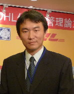

I-Lin Wang王逸琳
Professor · Department of Industrial & Information Management,
National Cheng Kung University (NCKU), Tainan, Taiwan
- Office No. 1 University Road, Tainan 701, Taiwan
- Tel +886-6-2757575 ext. 53123 · Fax +886-6-2362162
- Email ilinwang [at] mail.ncku.edu.tw
About
I am a Professor of Industrial & Information Management at National Cheng Kung University. My research is in operations research and optimization—designing efficient, effective algorithms and integer-programming models for network-flow, logistics, transportation, and scheduling problems. Recent work spans shared-mobility systems, coordinated routing of unmanned-vehicle fleets, post-disaster network restoration, warehouse robotics, and network interdiction.
I enjoy working on problems that look “easy” or “fundamental” but are in fact challenging—where a real breakthrough takes genuine effort. That is what keeps me returning to shortest paths and maximum flows. See the Research page for details.
Education
- Ph.D., Industrial & Systems Engineering, Georgia Institute of Technology, 2003
- M.S., Operations Research Center, Massachusetts Institute of Technology (MIT), 1996
- B.S., Aeronautical & Astronautical Engineering, National Cheng Kung University, 1991
Academic Appointments
- Professor, IIM, National Cheng Kung University, 2014–present
- Associate Professor, IIM, National Cheng Kung University, 2007–2014
- Assistant Professor, IIM, National Cheng Kung University, 2003–2007
- Research Assistant, ISyE / TLI / TLI-AP, Georgia Tech, 2000–2003
- Foreign Researcher, Communication Network System Research Lab, Fujitsu Laboratories Ltd., Kawasaki, Japan, 1996–1997
Editorial Service
- Area / Associate Editor, Computers & Industrial Engineering
- Associate Editor, International Journal of Operations Research
- Associate Editor, Journal of Industrial and Production Engineering
Selected Honors
- INFORMS RAS Problem-Solving Competition — led team “NCKU” to seven top finishes: 1st place (2017); 2nd place (2014, 2016, 2019); 3rd place (2011); Honorable Mention (2010, 2013). The first seven-time winning team.
- Lu Feng-Chang Memorial Medal (呂鳳章先生紀念獎章), Chinese Management Association, 2013
- Best Poster Award (four times), OR Group, MOST/NSC IE Division — 2009, 2016, 2018, 2022
- Outstanding Young Scholar Research Grant, NSC IE Division, 2013
- NCKU Excellent Teaching Award (2021); Teaching Innovation & University Social Responsibility Award (2022)
Students advised have earned 74 master’s thesis & paper-competition awards and 16 undergraduate project awards. See Awards.
For Prospective Students / 給未來的學生
有意加入本研究團隊的研究所新生，請先填寫新生背景調查表 (PDF)（面談必備）。
Prospective graduate students: please fill out the background survey (PDF) and bring it to your interview.